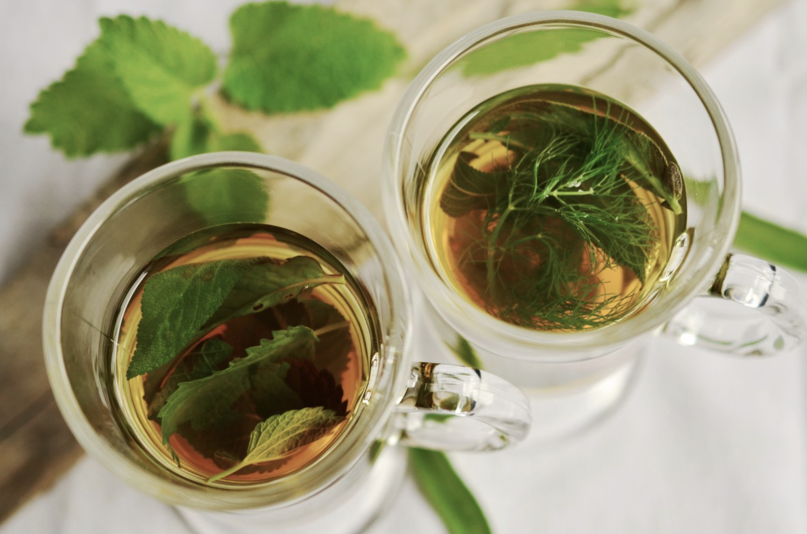
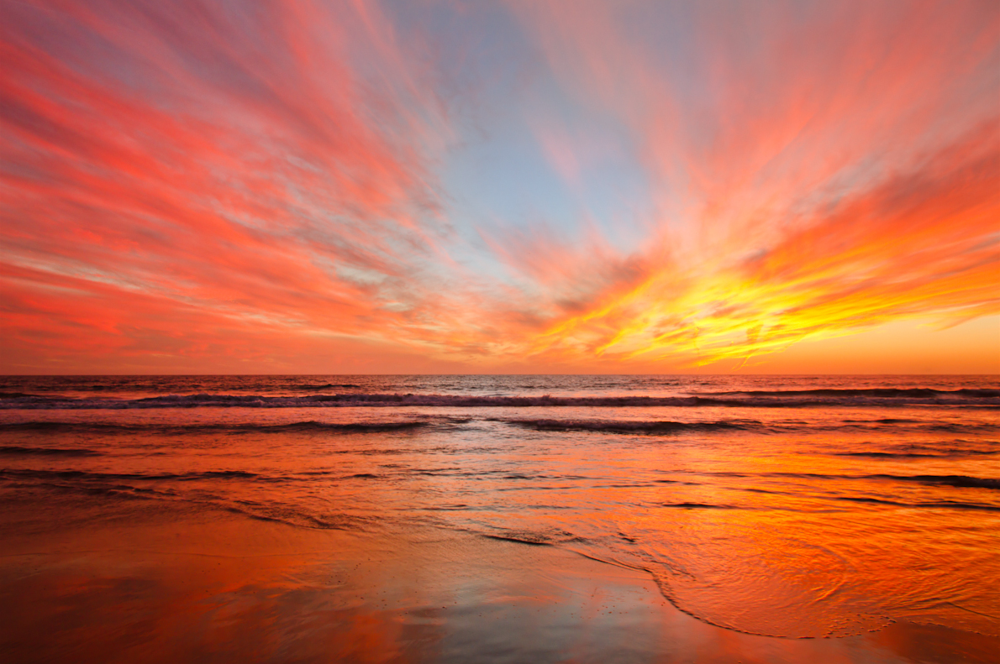
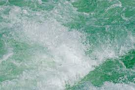
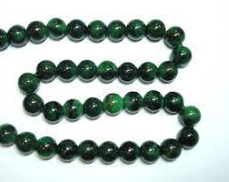
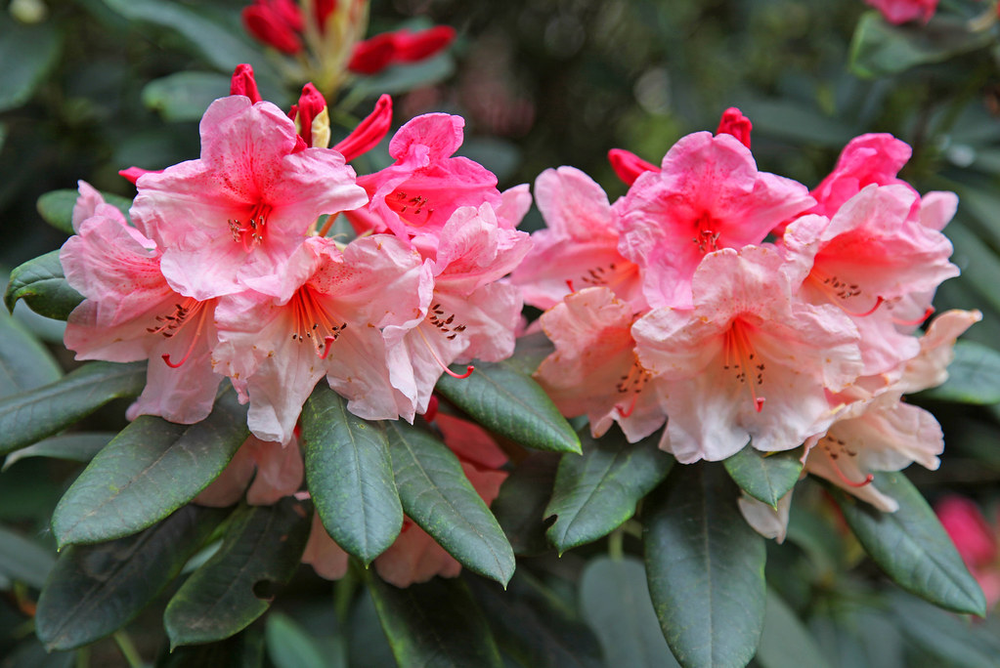

Hello, world! My name is Arushi!
This webpage contains what I like, dislike, my hopes, dreams, and favorite things.
Biography
I am a high school junior. I hope that graphic design could potentially become my side job when I am older. I despise coding yet here I am coding. I hope to eventually become fond of coding through HTML and by taking AP Computer Science. I started making graphics when I was in sixth grade and I can confidently say that I have improved quite a bit.
In my spare time, I like to read, make graphics, bike, and hang out with my friends. I am scared of animals, but I have become fond with cats and I hope to have a cat one day. I am in a few clubs at school. Some of the clubs I am in is DECA, BETA, and Key Club. I am the president of Key Club and though it is stressful at times it brings me great joy to help out the community along with my members. I would like to pursue a career in medicine or business. However, I do not want a desk, so I am leaning more towards medicine.

My Favorite Quotation
"Life is not a problem to be solved but a reality to be experienced." - Soren Kierkegaard
My Favorite Foods
- Paneer
- Red Thai Curry
- Maggie
- Spicy Chicken Sandwich
- Pesto Pasta
My Top 8 Favorite Flowers, In Order!
- Jasmine
- Lily
- Cherry Blossoms
- Lotus
- Hyacinth
- Lavender
- Lilac
- Periwinkle
Countries I Would Like to Visit and What I Would Like To Do There
- Greece
- Watch the sunset in Santorini
- Go cliff-jumping at Hydra island
- Enjoy the mediterranean countryside at the Pelion peninsula
- Italy
- Eat gelato
- Hike the Cinque Terre
- Sit in a gondola in Venice
- Thailand
- Visit the Damnoen Saduak Floating Market
- Take a trip to Koh Phi Phi
- Eat the steet food there
Other Favorite Things
| Favorite Subject | Math | |
|---|---|---|
| Favorite Song | "Bad" by Christopher | |
| Favorite Drink | Green Tea |  |
| Favorite Animal | Cats |  |
| Favorite Time of Day | Sunset |  |
| Favorite Colors | Seafoam Green, Jade Green, and Crepe pink |    |
.jpg){kind=link}
Contact Information
Email: nodonot@emailme.com
Phone: 123-123-1234